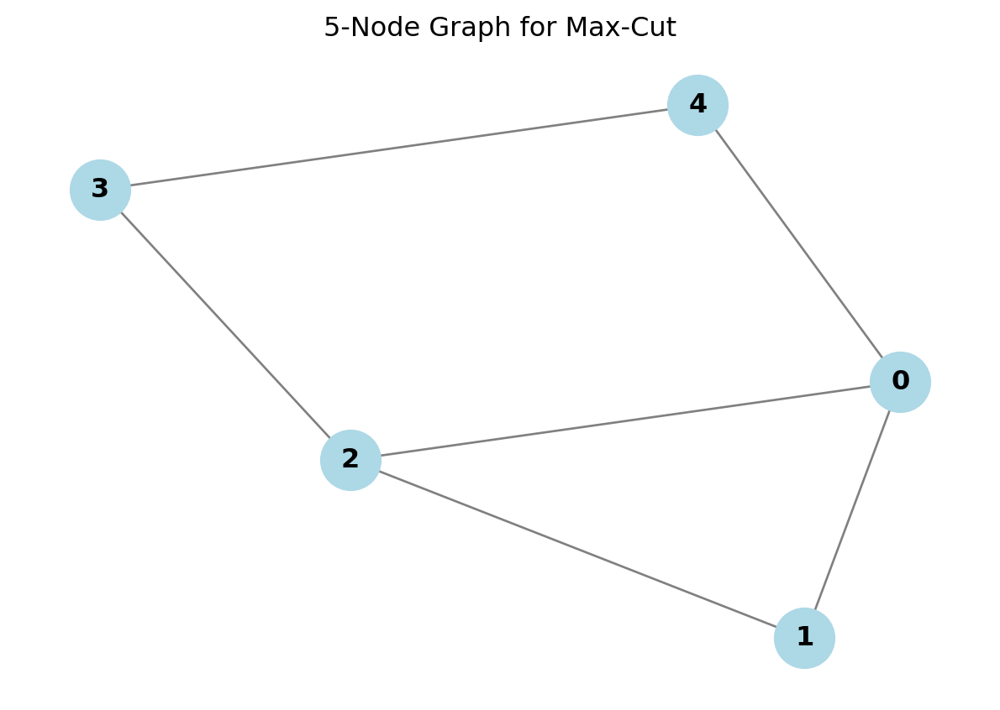

We use the Max-Cut problem to demonstrate how to transition from a classical matrix formulation to a quantum operator without ever building the full dense matrix.
Quantum Computing
VQE
Hamiltonian
Published
January 21, 2026
In our previous post, we solved the “Parameter Wall” by using Heuristic Ansatzes. This allowed us to represent a complex quantum state \(|\psi\rangle\) with just a few dozen parameters.
But VQE has two parts: \[E = \langle \psi | H | \psi \rangle\]
We fixed \(|\psi\rangle\) (the vector). Now we must fix \(H\) (the matrix).
It is only in textbook exercises that we are given a matrix and asked to find the lowest eigenvalue and the corresponding eigenvector. In real-world scenarios, we are almost never “given” the matrix. Instead, we start from a problem definition—a graph, a molecule, or a financial model.
Our job is to cast that problem as an eigenvalue/eigenvector problem. The general approach is to construct the Hamiltonian (\(H\)) directly from the problem definition. For large systems (e.g., 50 variables), we must do this implicitly, building \(H\) as a sum of Pauli strings without ever generating the full \(2^N \times 2^N\) matrix.
In this post, we will use the Max-Cut Problem to illustrate this approach step-by-step.
1. The Setup: Defining the Graph
The Goal: Divide the nodes of a graph into two groups (colors) such that the number of edges connecting different colors is maximized.
Let’s define a simple graph with 5 nodes.
Code
import networkx as nximport matplotlib.pyplot as pltimport numpy as np# 1. Define the Graphnum_nodes =5edges = [(0, 1), (1, 2), (2, 3), (3, 4), (4, 0), (0, 2)]G = nx.Graph()G.add_nodes_from(range(num_nodes))G.add_edges_from(edges)# 2. Draw the Graphplt.figure(figsize=(6, 4))pos = nx.spring_layout(G, seed=42)nx.draw(G, pos, with_labels=True, node_color='lightblue', edge_color='gray', node_size=700, font_weight='bold')plt.title("5-Node Graph for Max-Cut")plt.show()

2. The Classical Cost: \(\sum (x_i - x_j)^2\)
Before we look at quantum operators, let’s define the problem mathematically.
We represent the solution as a vector of binary variables \(x \in \{0, 1\}^N\).
\(x_i = 0\) means Node \(i\) is in Group A.
\(x_i = 1\) means Node \(i\) is in Group B.
For every edge \((i, j)\), we want to check if the nodes are in different groups. We can do this with the squared difference: \[C_{ij} = (x_i - x_j)^2\]
If \(x_i = x_j\) (Same Group): \((0-0)^2 = 0\) or \((1-1)^2 = 0\).
If \(x_i \neq x_j\) (Different Group): \((0-1)^2 = 1\) or \((1-0)^2 = 1\).
The total size of the cut is the sum over all edges: \[\text{Cut Size} = \sum_{(i,j) \in E} (x_i - x_j)^2\]
Matrix Form (The Laplacian)
This sum can be written elegantly using matrix notation. \[\sum_{(i,j) \in E} (x_i - x_j)^2 = x^T L x\] where \(L\) is the Laplacian Matrix (\(L = D - A\)).
To maximize the cut using a minimization algorithm (like VQE), we define our energy as negative: \[E(x) = - \sum_{(i,j) \in E} (x_i - x_j)^2 = -x^T L x\]
Let’s verify this classically.
Code
# 1. Compute Laplacian L = D - AL = nx.laplacian_matrix(G).todense()print("Laplacian Matrix L:")print(L)# 2. Evaluate Cost for every possible bitstringdim =2**num_nodesbest_energy =0best_x =Nonefor k inrange(dim):# Convert integer k to binary vector x (e.g., [1, 0, 1, ...]) x = np.array([(k >> i) &1for i inrange(num_nodes)])# Calculate Energy: E = - x^T L x energy =- (x.T @ L @ x)# Track the minimum (most negative is best)if energy < best_energy: best_energy = energy best_x = xprint(f"\nMax Cut Size: {-best_energy}")print(f"Best Configuration: {best_x}")
Classically, computing \(x^T L x\) is fast for one vector. But finding the best vector requires checking all \(2^N\) possibilities. To solve this on a quantum computer, we need to convert the binary variables \(x_i\) into quantum operators.
Let’s do this step-by-step, dotting every ‘i’ and crossing every ‘t’.
Step 3a: The Observable (Pauli Z)
We need a quantum operator that behaves like a classical bit check. When we measure it, it should tell us if the qubit is in state \(|0\rangle\) or \(|1\rangle\).
The operator that does this is the Pauli Z matrix:
We know that \(Z^2 = I\) (Pauli matrices are their own inverse) and \(Z_i, Z_j\) commute on different qubits (\(Z_i Z_j = Z_j Z_i\)): \[= \frac{1}{4} (I - 2 Z_i Z_j + I)\]\[= \frac{1}{2} (I - Z_i Z_j)\]
This is our final Hamiltonian term for one edge. To minimize energy (equivalent to maximizing the cut), we simply flip the sign:
\[H_{edge} = \frac{1}{2} (Z_i Z_j - I)\]
We can construct this implicitly for the whole graph by iterating over the edges. We map Node 0 to the first index of our list, Node 1 to the second, and so on.
Code
from qiskit.quantum_info import SparsePauliOppauli_list = []coeffs = []for u, v in edges:# Each edge contributes 0.5 * (Z_i Z_j - I)# 1. The Interaction Term (0.5 * Z_i Z_j)# Construct the string "IIZIIZ..." op_list = ["I"] * num_nodes op_list[u] ="Z" op_list[v] ="Z"# Join directly (Map Node 0 -> Leftmost Char) p_string ="".join(op_list) pauli_list.append(p_string) coeffs.append(0.5)# 2. The Constant Term (-0.5 * I)# We track this shift separately# Create the OperatorH_quantum = SparsePauliOp(pauli_list, coeffs)print(f"Number of Pauli Terms: {len(H_quantum)}")print(H_quantum)
Number of Pauli Terms: 6
SparsePauliOp(['ZZIII', 'IZZII', 'IIZZI', 'IIIZZ', 'ZIIIZ', 'ZIZII'],
coeffs=[0.5+0.j, 0.5+0.j, 0.5+0.j, 0.5+0.j, 0.5+0.j, 0.5+0.j])
4. Solving with VQE (Noisy Simulation via V2 Primitives)
Now we have the Implicit Matrix (\(H\)) and the Implicit State (Ansatz). We can solve the problem using VQE without ever storing \(2^N\) numbers.
To demonstrate robust results, we will use a Real Backend’s Noise Model, but execute on a local Simulator. We will use the modern Primitives V2 interface (BackendEstimatorV2 and BackendSamplerV2) which allows us to wrap our local simulator and treat it exactly like a cloud device.
Code
from qiskit.circuit.library import real_amplitudesfrom scipy.optimize import minimizefrom qiskit.transpiler.preset_passmanagers import generate_preset_pass_manager# Imports for the V2 Workflowfrom qiskit_ibm_runtime import QiskitRuntimeServicefrom qiskit_ibm_runtime.fake_provider import FakeManilaV2from qiskit_aer import AerSimulatorfrom qiskit.primitives import BackendEstimatorV2, BackendSamplerV2# 1. Fetch the Real Backend (Source of Truth)service = QiskitRuntimeService()real_backend = service.least_busy(operational=True, simulator=False, min_num_qubits=num_nodes)print(f"Fetching properties from Real Backend: {real_backend.name}")# 2. Create a Local Simulator based on that Backend# This copies the coupling map, basis gates, and error rates to your local machineaer_backend = AerSimulator.from_backend(real_backend)print(f"Running on: AerSimulator (mimicking {real_backend.name})")# 3. Ansatz & Transpilationansatz = real_amplitudes(num_qubits=num_nodes, reps=3)ansatz.measure_all() # Ensure we have measurements for the Sampler later# Transpile against the simulator (which matches the real topology)pm = generate_preset_pass_manager(optimization_level=3, backend=aer_backend)isa_ansatz = pm.run(ansatz)isa_hamiltonian = H_quantum.apply_layout(isa_ansatz.layout)print("Ansatz Transpiled for Hardware Topology.")# 4. Initialize V2 Primitives# We wrap our local AerSimulator in the generic V2 wrappersestimator = BackendEstimatorV2(backend=aer_backend)sampler = BackendSamplerV2(backend=aer_backend)# Set the shots (precision)estimator.options.default_shots =4000sampler.options.default_shots =2000def cost_function(params):# V2 Syntax: Pass a list of PUBs (Primitive Unified Blocs)# PUB format: (circuit, observables, parameter_values) pub = (isa_ansatz, isa_hamiltonian, params)# Run Estimator job = estimator.run([pub])# Return energy (evs = eigenvalues/expectation values)returnfloat(job.result()[0].data.evs)# 5. Optimizationprint("Optimizing VQE parameters (local noisy simulation)...")initial_point = np.random.random(ansatz.num_parameters)# We use COBYLA as it is robust to noisy cost landscapesresult = minimize(cost_function, initial_point, method='COBYLA')# Adjust for the constant shift (-0.5 per edge)constant_shift =-0.5*len(edges)vqe_energy = result.fun + constant_shiftprint(f"VQE Noisy Energy: {vqe_energy:.4f}")print(f"Classical Ideal: {-best_energy:.4f}")
Fetching properties from Real Backend: ibm_torino
Running on: AerSimulator (mimicking ibm_torino)
Ansatz Transpiled for Hardware Topology.
Optimizing VQE parameters (local noisy simulation)...
VQE Noisy Energy: -4.6692
Classical Ideal: 5.0000
Decoding the Solution
The energy tells us the size of the cut, but we need to know how to cut the graph. We sample the optimized circuit to find the most probable bitstring.
Code
# 1. Prepare optimized circuit# We assume the parameters from the result, but we must pass them in a PUB# for the Sampler (circuit, parameter_values)pub = (isa_ansatz, result.x)# 2. Samplejob = sampler.run([pub])# V2 Result Access: result[0].data.meas.get_counts()# Note: 'meas' is the name of the classical register (default is usually 'meas')counts = job.result()[0].data.meas.get_counts()# 3. Display Counts in Decreasing Ordersorted_counts =dict(sorted(counts.items(), key=lambda item: item[1], reverse=True))print("Top 5 Results (Counts):")for bitstring, count inlist(sorted_counts.items())[:5]:print(f"{bitstring}: {count}")# 4. Visualize the Best Cutbest_bitstring =max(counts, key=counts.get)print(f"\nWinning Configuration: {best_bitstring}")colors = []# Map bits directly: Char 0 -> Node 0for bit in best_bitstring: if bit =='0': colors.append('lightblue')else: colors.append('salmon')plt.figure(figsize=(6, 4))nx.draw(G, pos, with_labels=True, node_color=colors, edge_color='gray', node_size=700, font_weight='bold')plt.title("VQE Solution (Robust to Noise)")plt.show()
You may notice something interesting. Your classical solver might output 10010, but your Quantum Sampler outputs 00101. Are they different?
No! They are the exact same solution, differing only by representation.
Qiskit Ordering (Little Endian): Qiskit reads bitstrings from right-to-left. The string 00101 means:
Qubit 0 (Far Right) = 1
Qubit 1 = 0
Qubit 2 = 1
… Standard Python arrays (like our classical solver) are read left-to-right. This often causes the string to look reversed.
Symmetry (Bit Flipping): Max-Cut cares about differences, not absolute values.
Partition 00101 (Groups: A, A, B, A, B)
Partition 11010 (Groups: B, B, A, B, A) These are physically identical cuts. Flipping every bit results in the exact same cut value.
5. Conclusion: The End of VQE
We have now completed our VQE journey.
Implicit State: We replaced the vector with a parameterized circuit (Ansatz).
Implicit Matrix: We replaced the matrix with a sum of Pauli strings (Hamiltonian).
Optimization: We used a classical loop to find the best parameters.
This approach allows us to attack problems far larger than our RAM can hold. However, VQE is not perfect. It is an optimization algorithm, which means it can get stuck in local minima, and training can be slow.
In the next series of posts, we will explore Quantum Krylov Methods—a completely different approach that uses linear algebra concepts (like power iteration) directly on the quantum computer to find eigenvalues without the messy optimization loop.